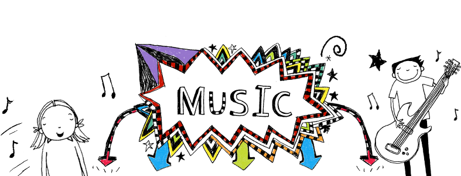

За статистикою лише 18% українців володіють англійською на рівні вище середнього. Але не час засмучуватися, адже дану новину можна інтерпретувати і в гарному ключі. Підвищимо цю статистику разом? Як саме – читай тут ;)
Щоб вивчити foreign language, необхідно повністю оточити себе мовою вивчення. Як же це зробити?
1. Старт, головне почни!
Змушуй себе, задобрюй цукерками, але сідай і вчи англійську, і ти побачиш, що це не якесь там нудне домашнє завдання, а супер-цікаве проводження часу. А ще головніше don’t give up (не здаватися), тому що у вивченні, неодмінно, найважливіше це частота занять, а не їх тривалість. Тому приділяй англійській, хоча б, по 15 хвилин кожен день.
2. Оточи себе англійською.
Як? На що ти дивишся найчастіше всього? У сучасному світі відповідь очевидна – ТЕЛЕФОН! Тож:
- Крок перший: змінюємо інтерфейс телефону на англійську;
- Крок другий: шукаємо цікаві apps для вивчення англійської, чи то для вивчення vocabulary, чи то подкасти типу BBC listening і т.п.;
- Крок третій: оточуємо себе англійською всюди. Почнемо з дому:)
Як, запам’ятовуй: клеїмо стікери англійських назв на ВСЕ, що бачимо, головне домашніх улюбленців не чіпайте, jk (just kidding). І от уже ти ходиш по flat, відкриваєш fridge, береш там juice, і відчуваєш себе справжнім Englishman.
3. Слухай англійською.
А яка твоя улюблена пісня? Ага, вона англійською мовою? Ну тож чудово, наступний раз, як будеш їхати в маршруточці і слухати свій плейліст, згадай просту математичну формулу:
гуглиш слова з перекладом пісень + читаєш їх + підспівуєш + вчиш lyrics = плюс десяток, а то і сотень нових слів англійською в словниковий запас
ГА-РАН-ТО-ВА-НО!
Спробуй класний ресурс із піснями ось тут.
4. Дивись англійською.
Так-так, це про фільми, серіали та, звичайно, відосики на ютуб. Якщо лише почав вчити англійську, порада: почни з серіалу Extra, а далі втягнешся і перейдеш на щось складніше. Для тих, хто вже не новачок в English, радимо TED talks та різні популярні серіали типу Gossip Girl, The Vampire Diaries, Riverdale. Плюс в тому, що з англійською будеш завжди в темі, адже серіальчики виходять в оригіналі раніше, ніж з перекладом, тож будеш всім спойлерити наступні серії :)
5. Говори англійською.
Не біда якщо в тебе немає друга нейтів спікера, є й інші способи. Один з них, говори зі своїми знайомими, друзями, близькими. Це крутий лайфхак для секретиків.
А-ну ось така в нас ситуація:
Уяви, ви з подругою/другом обговорюєте ваше особисте життя, а тут поряд іде ваш знайомий! Що ж робити? Не повіриш, але вчити англійську, та ще й закликати своїх друзів та рідних. Та все ж, до чого це?
Дубль номер 2. Ви з подругою/другом обговорюєте ваше особисте життя, а тут поряд іде ваш знайомий! Що ж робити? Та нічого, адже ви share secrets with each other (обмінюєтеся секретиками однин з одним) in English. And unlikely that someone understands what you are talking about (і навряд чи хтось зрозуміє про що йде ваша розмова). Навіть якщо ваш знайомий вчить англійську, йому складно буде відразу схопити про що ж йде мова, адже це не його native language.
Тож спробуй знайти собі свого buddy learner (друга по вивченню мови), і уявляйте себе справжніми іноземцями.
Інший крутий та головне найдієвіший спосіб – це, of course, курси, speaking clubs, тут ти точно зможеш на 100% прокачати свій англійський у всіх аспектах. Тадааам Green Country може стати чарівником і підтримати тебе у цьому починанні.
6. Пиши англійською.
Що саме? Та будь-що: свої думки, шкільний щоденник (розклад уроків), планнер, нотатки, перекладай свої твори з української на англійську. Та взагалі, згадай часи «любого щоденника» і заміни його новеньким – “dear diary”. І все! Навіть не треба ніякого ключику, щоб ніхто не зміг прочитати твої секретики.
7. Читай англійською.
Починаємо з англомовних блогів, закінчуємо книжечками. До речі, в нас ти знайдеш круті підбірки книжок, саме для твого рівня! Так-так, ми передбачили для тебе все необхідне.
Тобі залишилося лиш одне: читай пункт 1 :)
Тож хутчіш хапай друзів, приходь на курси та вчи англійську з нами! У нас ти скоріше зможеш знайти свого buddy learner для секретиків.
Підібрала дієві лайфхаки, Яна Бобрікова